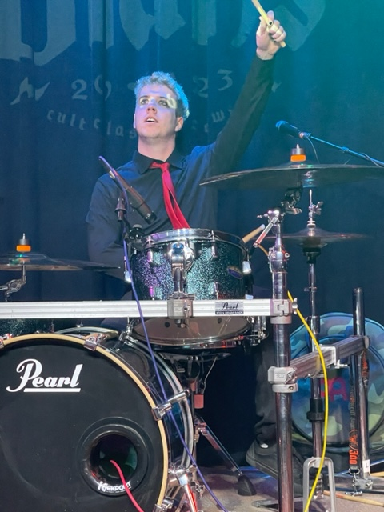

Dylan Ira

Summary
I am a quick learner with experience in customer service, manufacturing, and team leading
Education
Salisbury University, Salisbury, MD; Bachelor of Music in Music Technology/Production, 2018
Senior Project: Recorded and produced a full length album for a fellow student showcasing a wide variety of genres
Work Experience
Paul Reed Smith Guitars (January 2020-Present)
PRS Guitars, Stevensville, MD
PRS Guitars Website
Computer Numerical Control (CNC) Machine Operator
- Opertaed CNC machines to perform initial cut of guitar bodies
- Performed initial set up and basic maintenance of CNC machine
- Responsible for quality and verification checks of machined guitar bodies
Guitar Body Sander
- Responsible for sanding all guitar body parts and models
- Performed basic wood repairs utilizing epoxy and glue methods
- Ensured company production metrics are achieved within strict quality standards
Quality Control Team Lead
- Team lead for a group of five or more sanders
- Responsible for conducting final checks and quality assurance of guitar bodies prior to moving to the next phase of production
- Perform detailed wood repairs utilizing epoxy, glue, and splicing methods
- Provide training and mentoring for new hires and current employees
- Conduct trial days for the hiring process at PRS
- Collaborates with management on production metrics and status of quality conformance
Body Team Safety Representative
- Volunteer position as collateral duties to current job responsibilities
- Performs quarterly safety inspections for the guitar body team productions work area
- Conducts safety orientation for all new body team members
- Serve as a role model for safety standards for employees
Trimper Rides and Amusements (Summer 2018, 2019)
Trimper Rides and Amusements, Ocean City, MD
Game Operator and Reatil Sales
- Advertised and operated multiple games on the Ocean City boardwalk
- Customer service for guests and tourists of all ages
- Organized and operated multiple retail stores in downtown Ocean City without supervision
City of Annapolis Harbor Master (Summer 2015-2017)
Annapolis Harbor Master, Annapolis, MD
Assistant Harbormaster
- Assisted with mooring of boats up to 100 feet
- Organized reservations for long term dockage
- Provided customers with service for guests and recommendations on city attractions
Internship Experience
Music Technology Intern (2018)
Event Technical Services, Salisbry, MD
- Performed set up, break down, and soundboard operation during events on Salisbury University's campus
- Recorded and mixed studen recitals and campus concerts
- Worked set up and soundboard for professional artists such as the EKW Trio and Stealing Oceans
Extracurricular Activities
Auido Engineer (2018)
Ward After School Program, Salisbury, MD
- Worked with elementary school students in the Salisbury University recording studio
- Organized and lead the student recording sessions
- Mixed and edited the students songs
- Set up and attended the showcase of the students final product
My Hobbies
Contact me